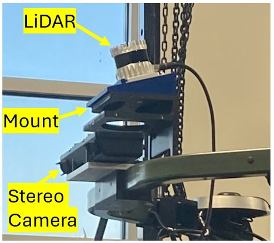
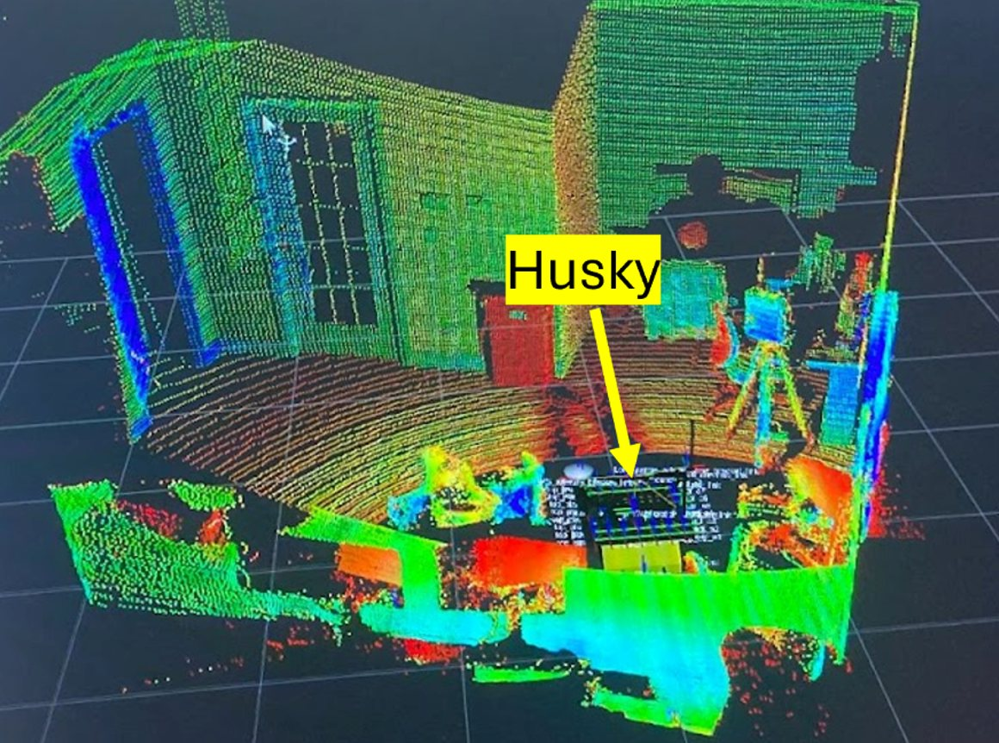

hardware · calibration · localization
Sensing stack: calibration, fusion & localization
Perception starts with hardware. I designed a −15° tilted sensor mount for a John Deere R-Gator, calibrated and fused LiDAR and stereo cameras on two robots, and built the R-Gator's odometry from an IMU and wheel encoders so detections could be placed in a map.
Tilted sensor mount
The OS1-128's vertical field of view is only ±22.5°, so a level LiDAR leaves a large blind region in front of the vehicle. Mounting the LiDAR and a MultiSense S27 on the roll bar at −15° cuts the blind region to 1.5 m from the front axle, which is critical for seeing the ground and negative obstacles.
LiDAR–camera calibration & fusion
Every sensor frame was modelled in the vehicle's URDF from measured positions and orientations, and transforms were handled with TF in ROS and ROS2. On the R-Gator the stereo camera's point cloud is fused with the LiDAR (ROS2 Humble); the Husky got the same treatment.
EKF localization
The stock R-Gator had no localization. I fused a high-precision
VectorNav VN-310 IMU with wheel encoders in an extended Kalman filter (robot_localization, ROS2 Humble,
Python) and passed the odometry to the mapping modules so obstacles stay put as the vehicle moves.



Sensors used
- Ouster OS1-128 (R-Gator, Clearpath Husky): 128 channels, 45° vertical FOV, 10 Hz. The main sensor for ground segmentation and negative obstacles.
- Ouster OS2-64 (Husky): long-range, 64 channels.
- Velodyne VLP-16 (Clearpath Jackal): lightweight 16-channel; too sparse on the ground for terrain classification.
- Carnegie Robotics MultiSense S27 (R-Gator, Husky): rugged stereo, effective range up to 30 m.
- Intel RealSense D435i (Jackal): compact RGB-D, best within ~3 m and not built for sand and water.
- VectorNav VN-310 GNSS/INS (R-Gator) to keep odometry drift low.
References & credits
- T. Moore and D. Stouch, “A generalized extended Kalman filter implementation for the Robot Operating System,” Intelligent Autonomous Systems 13, 2014.
- S. Macenski, T. Foote, B. Gerkey, C. Lalancette, and W. Woodall, “Robot Operating System 2: Design, architecture, and uses in the wild,” Science Robotics, 7(66), 2022.
Hardware credits. R-Gator: Deere & Company (John Deere). Husky, Jackal, Warthog: Clearpath Robotics. OS1-128, OS2-64 LiDAR: Ouster. VLP-16 LiDAR: Velodyne Lidar. MultiSense S27 stereo camera: Carnegie Robotics. RealSense D435i: Intel. VN-310 GNSS/INS: VectorNav Technologies. Product names and trademarks belong to their respective owners.